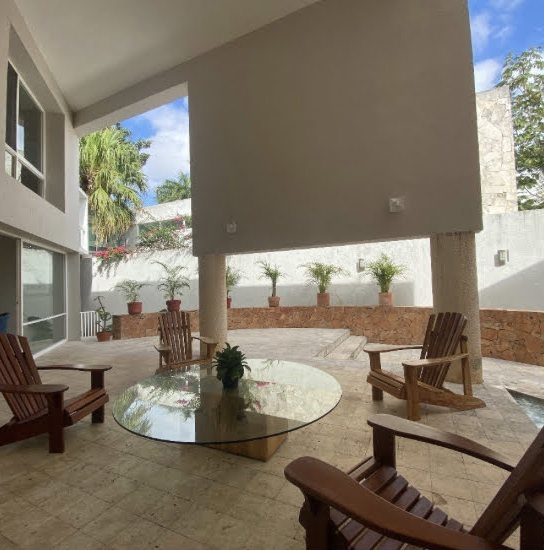
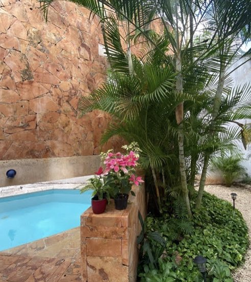
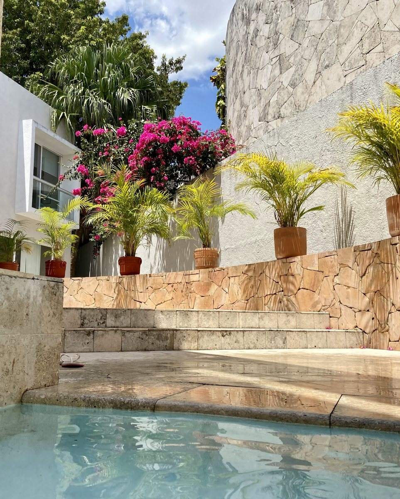
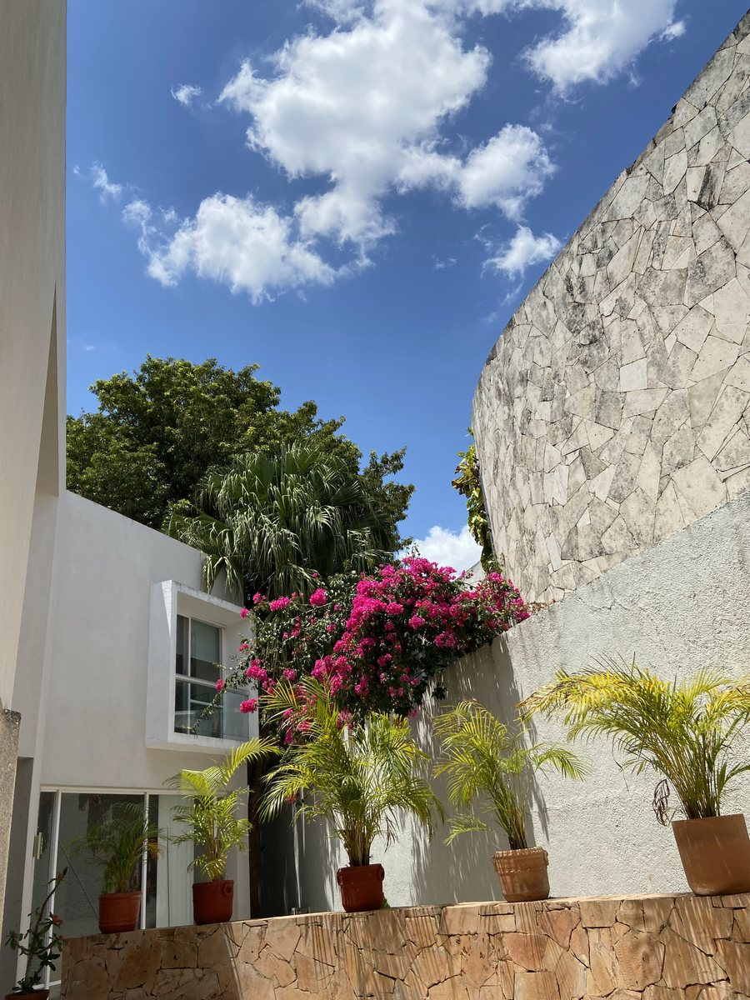
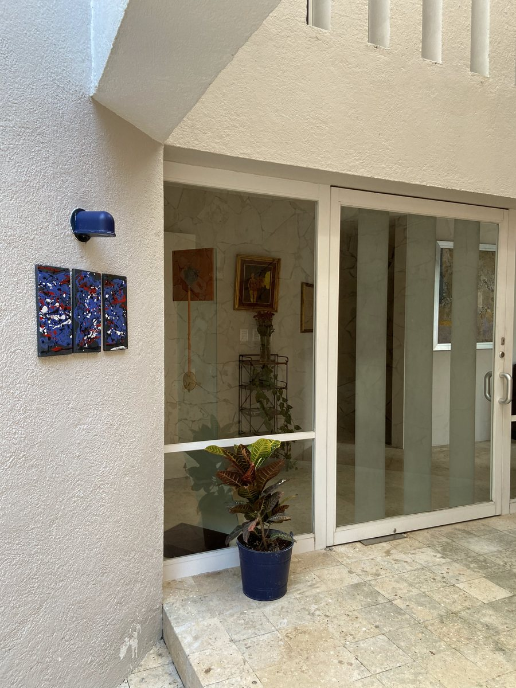
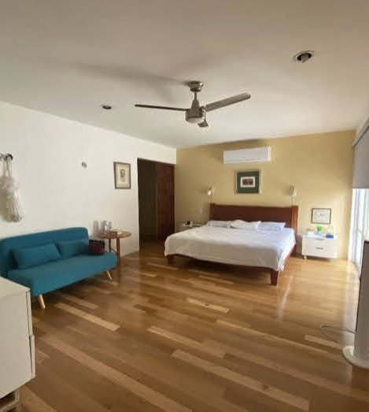
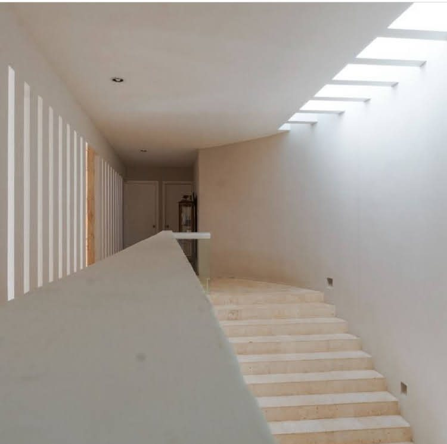
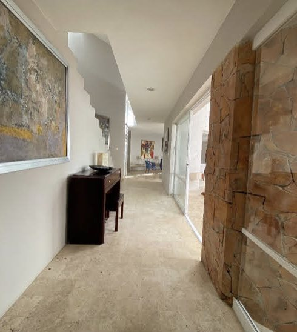
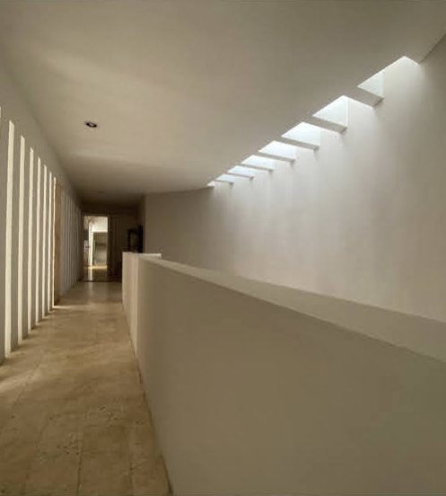
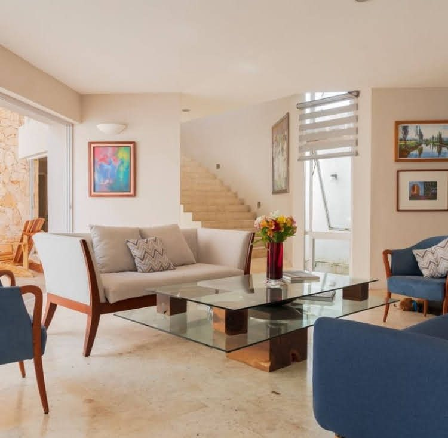

An award-winning house by Yucatecan architect Jorge C. Zoreda Novelo — 490 m² on a 582 m² lot in Emiliano Zapata Norte, built around a stone-walled courtyard, a double-height terrace and a long, narrow pool.
Casa Cervera took first place in the housing category at the Bienal de Arquitectura de Yucatán, awarded by the Colegio Yucateco de Arquitectos. From the street it gives away almost nothing: a clean white volume, a stone pier and a garage door. Inside, it opens up. A long access corridor runs beside a wall of hand-laid stone, narrow slots of daylight cut through the white walls, and every main room looks onto the courtyard.
The ground floor holds the living room, a separate dining room, the kitchen with its breakfast area and pantry, and a guest half bath. Glass doors lead out to the terrace, which rises the full two storeys beneath a suspended white volume and gives onto the pool and gardens. A service room with its own bathroom, the laundry and a service patio sit apart from the main rooms, and the covered garage takes two cars.
Upstairs, under wood floors, are the three bedrooms, linked by a sitting area at the top of the stairs. The principal suite has a dressing room, wardrobe, bathroom and its own open terrace; the second bedroom a dressing room, wardrobe, bathroom and balcony; the third a dressing room, wardrobe and bathroom of its own.
Outside





The terrace rises the full two storeys; the pool runs the length of the courtyard.
Inside





Finishes & features
- First place, housing category — Bienal de Arquitectura de Yucatán
- Designed by Arq. Jorge C. Zoreda Novelo
- Double-height covered terrace onto the courtyard
- Pool and landscaped gardens
- Hand-laid stone feature walls
- Stone floors downstairs, wood floors upstairs
- Separate living and dining rooms
- Kitchen with breakfast area and pantry
- Three bedrooms, each with dressing room and bathroom
- Principal terrace; balcony to the second bedroom
- Service room with full bath; laundry and service patio
- Covered garage for two cars, gated
- Reinforced-concrete structure and roofs
- Hydropneumatic water system
The land
The lot is 582 m², flat and level, with 12.8 m of frontage onto Calle 30 and 40.8 m of depth — the long plan that lets the house wrap its rooms around the courtyard. Built around 2000 in reinforced concrete, it has been kept in very good condition.
Emiliano Zapata Norte
Emiliano Zapata Norte is an established residential colonia in north Mérida, inside the Periférico and a few streets east of Prolongación Paseo de Montejo. The streets are quiet and lined with two-storey family houses, and schools, banks, shopping, restaurants and hospitals are all close by.